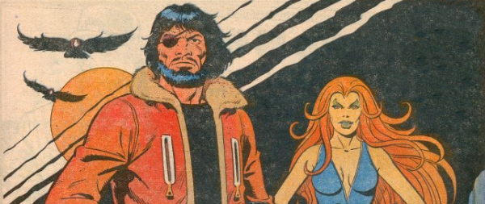

Or Charles Bronson in Planet of the Furries. This epic saga marks a record in 2000 AD: a fifty-one prog unbroken art-run by Massimo Belardinelli. Nick Stone finds himself blasted into a future where animal hybrids (yujees) are a slave race to a human elite.
Art by Dave Gibbons
| Story Title | Parts | Pages | w indicates a wraparound coverCovers | Year(s) | Issues | Writer | Artist | Colourist | Letterer |
|---|---|---|---|---|---|---|---|---|---|
| Meltdown Man | 50 | 221 | 183: Massimo Belardinelli 205: Dave Gibbons 227: Massimo Belardinelli 3 | 1980-1981 | Reprints: X11‑X12178-227 | Alan Hebden | Massimo Belardinelli | <-- 5pp, [b&w] | Jack Potter: 1‑22, 24‑29, 31‑35, 38‑39, 41, 43‑47 [Ina Rush]: 23 Peter Knight: 30 Tony Jacob: 36‑37, 40, 48‑49 Tom Frame: 42 Bill Nuttall: 50 various |
| >> Posters << | |||||||||
Star Pin‑UpNick Stone … Meltdown Man | ~ | 1 | 0 | 1981 | 211 | n/a | Dave Gibbons | <-- | n/a |
From 2000 AD Art‑FileMeltdown Man | 1 | 1 | 0 | 1989 | 654 | n/a | Massimo Belardinelli | <-- | n/a |
| >> Features << | |||||||||
| 2000 AD Fear-File: Tiger Commander | 1 | 1 | 0 | 1983 | 2KA'84 | editorial | Massimo Belardinelli | [b&w] | n/a |
| >> Floating Covers << | |||||||||
| Meltdown Man | 2 | ~ | 2 | 2005 | X11-X12 | n/a | Cliff Robinson | <-- | n/a |
| year | episodes | pages |
| 1977 | 0 | 0 |
| 1978 | 0 | 0 |
| 1979 | 0 | 0 |
| 1980 | 15 | 691 |
| 1981 | 35 | 52 |
| 1982 | 0 | 0 |
| 1983 | 0 | 0 |
| 1984 | 0 | 0 |
| 1985 | 0 | 0 |
| 1986 | 0 | 0 |
| 1987 | 0 | 0 |
| 1988 | 0 | 0 |
| 1989 | 0 | 0 |
| 1990 | 0 | 0 |
| 1991 | 0 | 0 |
| 1992 | 0 | 0 |
| 1993 | 0 | 0 |
| 1994 | 0 | 0 |
| 1995 | 0 | 0 |
| 1996 | 0 | 0 |
| 1997 | 0 | 0 |
Comic strip data (excludes other content):